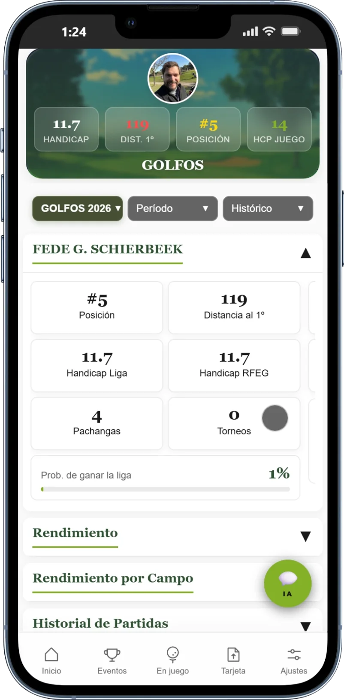
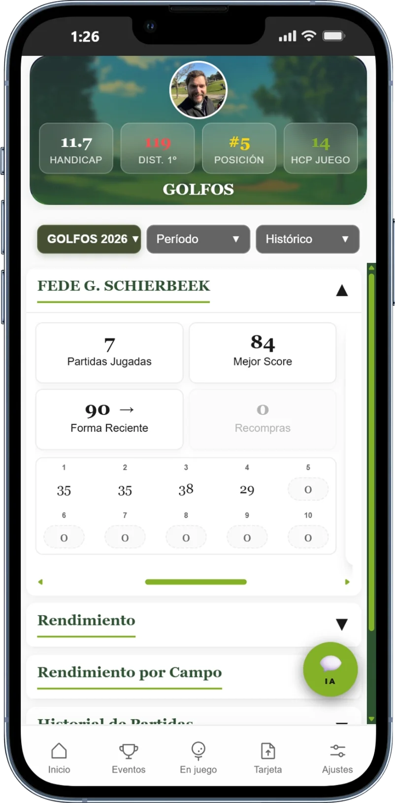
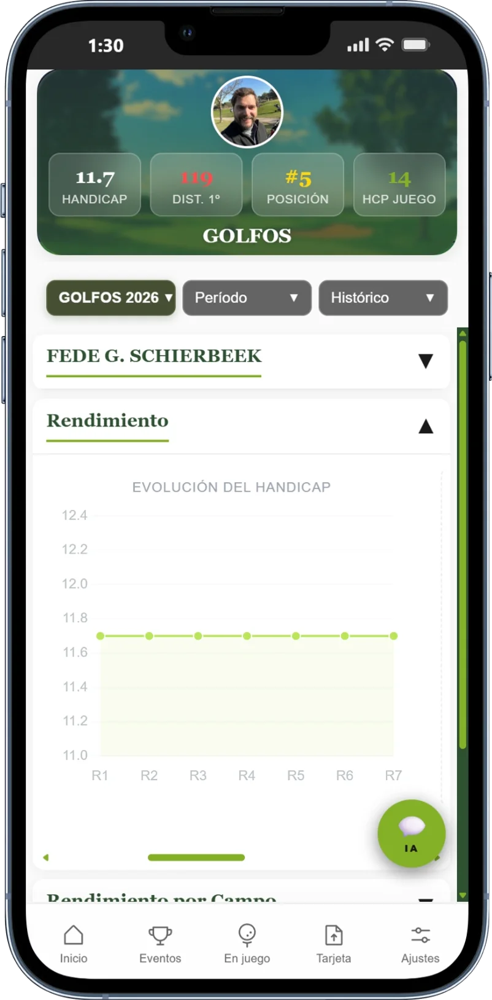
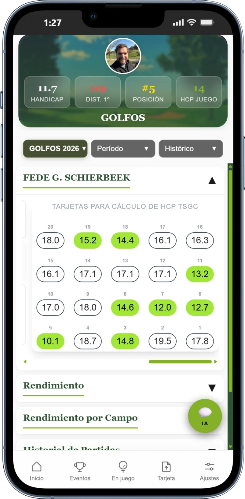
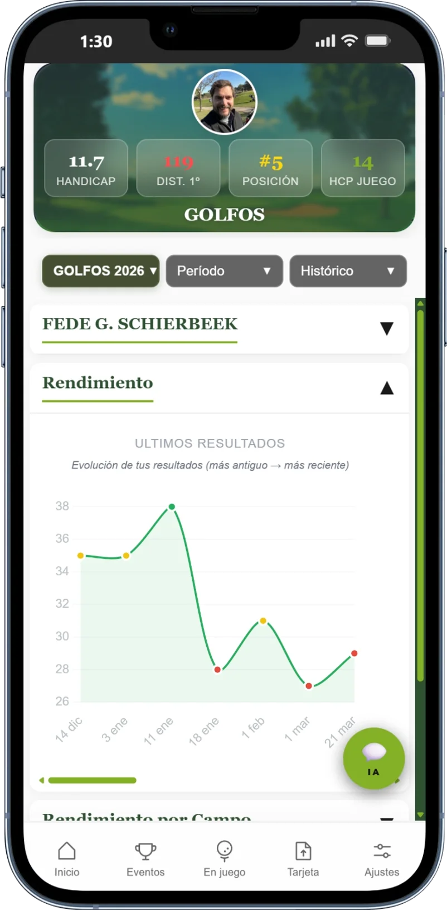
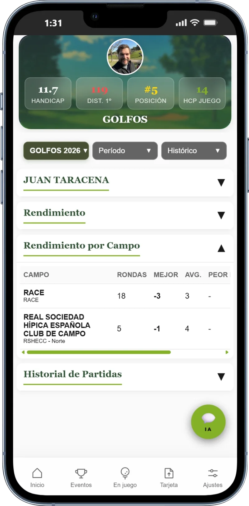
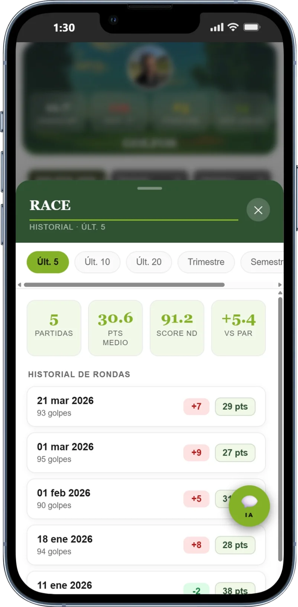
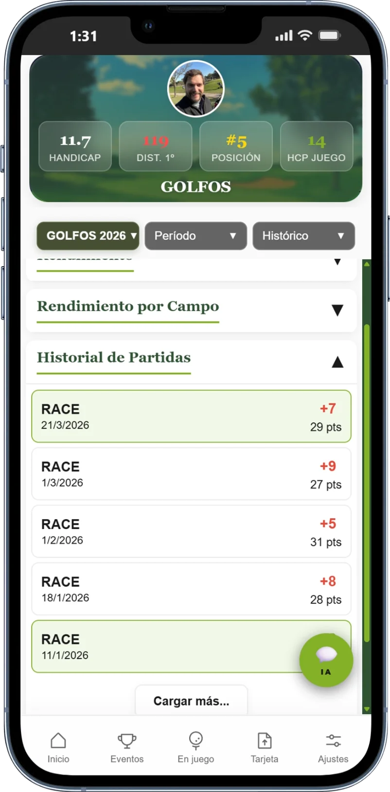
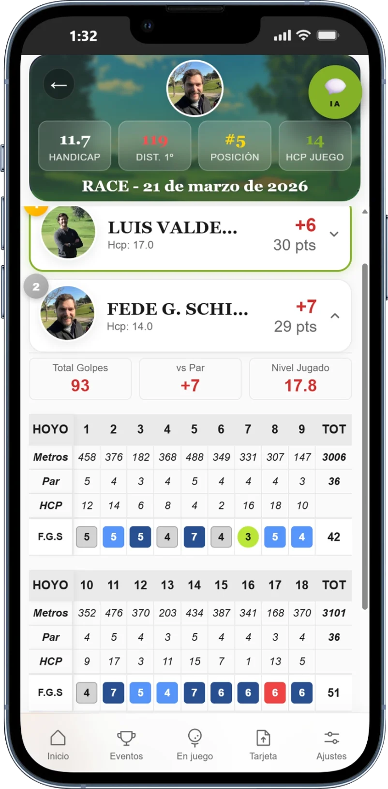

Estadísticas detalladas de cada jugador de la liga: rendimiento, evolución, campos favoritos e historial completo de cada ronda.
La primera pantalla de estadísticas muestra lo más importante: dónde estás en la clasificación, cuánto le sacas o te sacan, y la comparativa entre tu hándicap WHS de la liga y el hándicap oficial de la RFEG.
La probabilidad de ganar la liga se calcula mediante simulación Monte Carlo con tus scores históricos y las rondas que quedan de temporada.

Todas las métricas de tu temporada en una sola vista: cuántas rondas llevas, cuál es tu mejor score, cómo estás de forma en las últimas partidas. También el histórico de tus últimos 10 resultados ordenados cronológicamente.

Gráfico de la evolución de tu índice WHS a lo largo de la temporada. Ves exactamente cómo ha subido o bajado después de cada ronda entregada.
El algoritmo WHS usa los mejores N diferenciales de las últimas 20 rondas. El grid muestra exactamente cuáles están siendo usados en tu cálculo actual.


Gráfico de línea con tus puntos Stableford en cada ronda, ordenados cronológicamente. De un vistazo ves si tu forma es ascendente, descendente o irregular.

Tabla con todos los campos en que has jugado: número de rondas, mejor resultado, media y peor ronda. Toca cualquier campo para ver el desglose completo con filtros de período y el historial de cada ronda.


Lista de todas tus rondas con fecha, campo, resultado vs par y puntos Stableford. Toca cualquiera para ver el scorecard completo: golpes hoyo a hoyo, puntos por hoyo, hándicap de juego y nivel jugado (diferencial WHS).


Todas las estadísticas disponibles desde el primer día, sin configuración adicional. Solo juega y la app lo recoge todo.